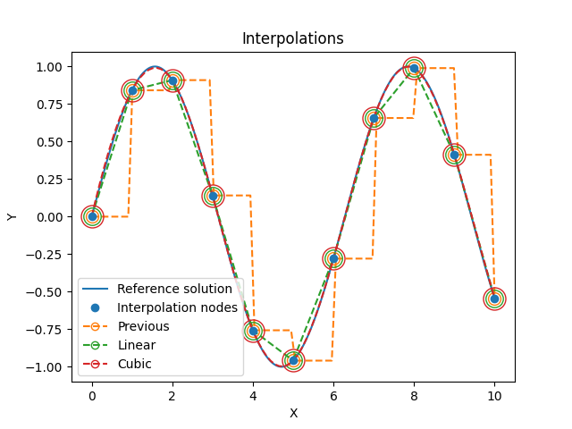

📈 Interpolation
interpolate
{kind=link}
- class fibermat.interpolation.Interpolate(y, size=None, **kwargs)
A class for interpolating array values inherited from scipy.interpolate.interp1d.
Parameters
- yarray-like
Data to be interpolated.
Attributes
- xarray-like
Interpolation parameter.
- tarray-like
Interpolation parameter between 0 and 1.
- dtypetype
Data type used for interpolation.
Methods
__call__():Return interpolated data.
Example
import numpy as np
from matplotlib import pyplot as plt
from fibermat import *
# Reference solution
x = np.linspace(0, 10, 1001)
y = np.sin(x)
# Interpolation nodes
X = x[::100]
Y = y[::100]
# Interpolated functions
f_ = Interpolate(Y, size=11, kind='previous')
g_ = Interpolate(Y, size=11, kind='linear')
h_ = Interpolate(Y, size=11, kind='cubic')
x_ = Interpolate(X, size=11)
t = np.linspace(0, 1, 100)
# Figure
plt.figure()
p, = plt.plot(x, y, label="Reference solution")
plt.plot(X, Y, 'o', color=p.get_color(), zorder=np.inf, label="Interpolation nodes")
p, = plt.plot(x_(t), f_(t), '--')
plt.plot(x_(), f_(), 'o', ms=10, mfc='none', c=p.get_color())
plt.plot([], [], 'o--', mfc='none', c=p.get_color(), label="Previous")
p, = plt.plot(x_(t), g_(t), '--')
plt.plot(x_(), g_(), 'o', ms=14, mfc='none', c=p.get_color())
plt.plot([], [], 'o--', mfc='none', c=p.get_color(), label="Linear")
p, = plt.plot(x_(t), h_(t), '--')
plt.plot(x_(), h_(), 'o', ms=18, mfc='none', c=p.get_color())
plt.plot([], [], 'o--', mfc='none', c=p.get_color(), label="Cubic")
plt.xlabel("X")
plt.ylabel("Y")
plt.legend()
plt.title("Interpolations")
plt.show()